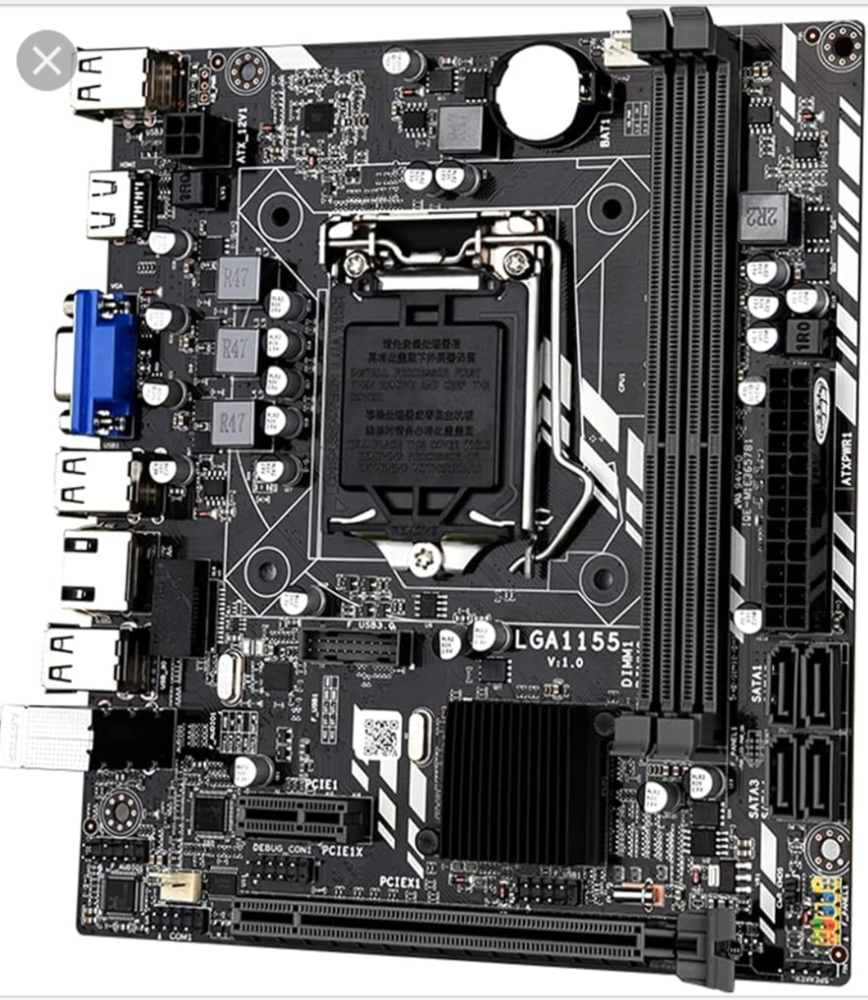
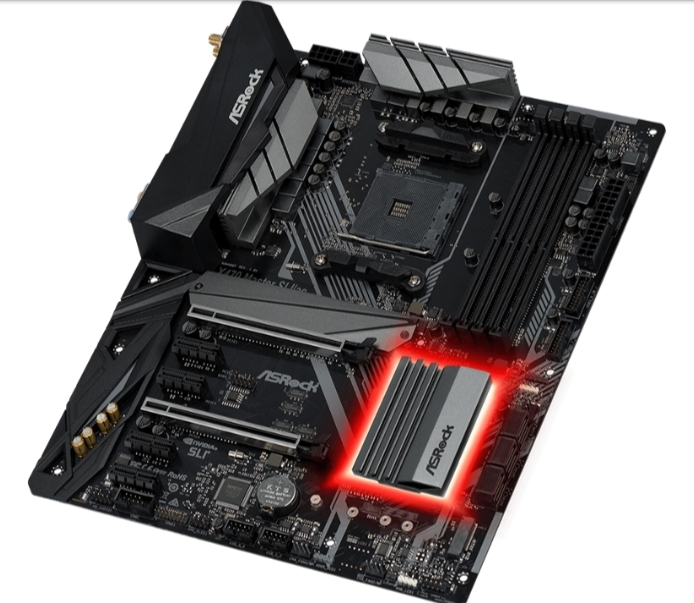
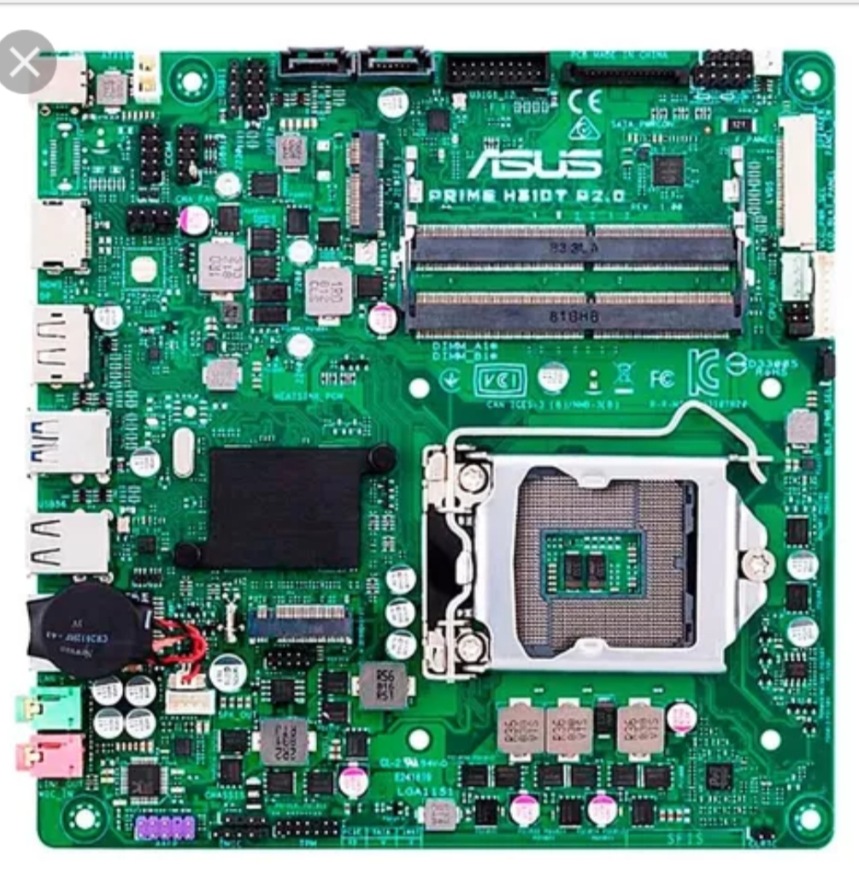
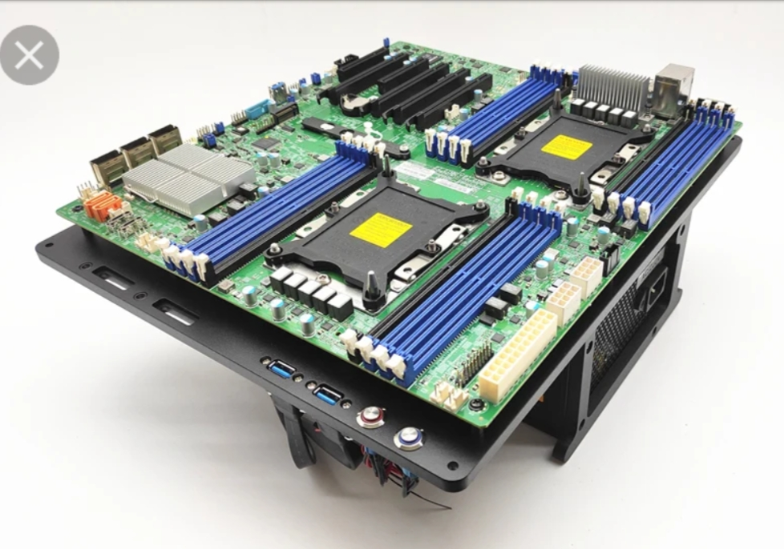

| Tipo | Descrição | Uso | Imagem |
|---|---|---|---|
| ATX (Advanced Technology Extended) | Padrão mais comum, suporta várias entradas e expansões. | Usado em desktops de médio e grande porte. |  |
| Micro-ATX | Menor que a ATX, mas mantém boa parte das funcionalidades. | Gabinetes compactos. |  |
| Mini-ATX | Muito compacta, ideal para sistemas pequenos e portáteis. | HTPCs ou pequenos servidores. |  |
| E-ATX | Maior que ATX, usada em PCs de alto desempenho. | Estações de trabalho e setups gamers. |  |